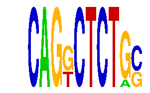

family_3 |
|---|
|  |
| Download PWM |
| Download instances (motifs) |
| Show motif distribution |
Query_ID | Query_Consensus | Subject_Name | Source_DB | Subject_ID | Length | Orientation | Offset | Divergence | Overlap | Subject_Consensus |
|---|---|---|---|---|---|---|---|---|---|---|
| family_3 | CAGGCTCTGC | SNACANNNYSYAGA | JASPAR | PF0080 | 14 | reverse-complement | 5 | 0.523 | 5 | CTACAAYTCCCAGA |
| family_3 | CAGGCTCTGC | TGCGCANK | JASPAR | PF0022 | 8 | as given | -4 | 0.830 | 4 | TGCGCANG |
Sequence | Start_position (from start) | Start_position (from end) | Average conservation | Best conservation score | Instance_with_best_CS | Best_Z-score | Instance_with_best_ZS | Strand |
|---|---|---|---|---|---|---|---|---|
| chr15:76829089-76830089 | 446 | 456 | 0.007 | 0.035 | CAGKCTCTGS | 12.697031 | CAGKCTCTRC | -1 |
| chr11:12209153-12210153 | 704 | 714 | 0.0011 | 0.009 | CAGKCTCTGS | 15.144989 | CAGKCTCTGS | 1 |
| chr7:149847893-149848893 | 381 | 391 | 0.0005 | 0.002 | CAGKCTCTRC | 12.697031 | CAGKCTCTRC | 1 |
| chr1:166391413-166392413 | 573 | 583 | 0.7326 | 0.985 | CAGKCTCTRC | 15.144989 | CAGKCTCTGS | 1 |
| chr4:133848968-133849968 | 314 | 324 | 0.0583 | 0.145 | CAGKCTCTGS | 15.144989 | CAGKCTCTGS | 1 |
| chr2:90958919-90959919 | 879 | 889 | 0.001 | 0.002 | CAGKCTCTGS | 15.144989 | CAGKCTCTGS | -1 |
| chr4:129448624-129449624 | 773 | 783 | 0.036 | 0.328 | CAGKCTCTRC | 15.144989 | CAGKCTCTGS | 1 |
| chr17:12952223-12953223 | 571 | 581 | 0.0097 | 0.037 | CAGKCTCTGS | 15.144989 | CAGKCTCTGS | 1 |
| chr1:74008798-74009798 | 86 | 96 | 0.5005 | 0.906 | CAGKCTCTGS | 15.144989 | CAGKCTCTGS | -1 |
| chr9:24569651-24570651 | 561 | 571 | 0.8122 | 1 | CAGKCTCTRC | 12.697031 | CAGKCTCTRC | -1 |
| chr3:159445053-159446053 | 142 | 152 | 0.0163 | 0.03 | CAGKCTCTRC | 15.144989 | CAGKCTCTGS | 1 |
| chr1:74285954-74286954 | 892 | 902 | 0.0026 | 0.008 | CAGKCTCTRC | 12.697031 | CAGKCTCTRC | 1 |
| chr11:11931217-11932217 | 704 | 714 | 0.0021 | 0.004 | CAGKCTCTGS | 15.144989 | CAGKCTCTGS | 1 |
| chr7:143199581-143200581 | 179 | 189 | 0.9994 | 1 | CAGKCTCTGS | 12.697031 | CAGKCTCTRC | 1 |
| chr4:129590772-129591772 | 770 | 780 | 0.1285 | 0.23 | CAGKCTCTRC | 15.144989 | CAGKCTCTGS | 1 |
| chr11:12334656-12335656 | 440 | 450 | 0.0002 | 0.001 | CAGKCTCTRC | 15.144989 | CAGKCTCTGS | 1 |
| chr8:35033934-35034934 | 949 | 959 | 0.0007 | 0.002 | CAGKCTCTGS | 15.144989 | CAGKCTCTGS | -1 |
| chr11:11786694-11787694 | 338 | 348 | 0.4734 | 0.505 | CAGKCTCTGS | 15.144989 | CAGKCTCTGS | 1 |
| chr17:26987569-26988569 | 58 | 68 | 0.0016 | 0.005 | CAGKCTCTGS | 12.697031 | CAGKCTCTRC | 1 |
| chr7:3298068-3299068 | 247 | 257 | 0.0184 | 0.054 | CAGKCTCTGS | 12.697031 | CAGKCTCTRC | 1 |
| chr10:116460642-116461642 | 687 | 697 | 0.9412 | 1 | CAGKCTCTGS | 12.697031 | CAGKCTCTRC | -1 |